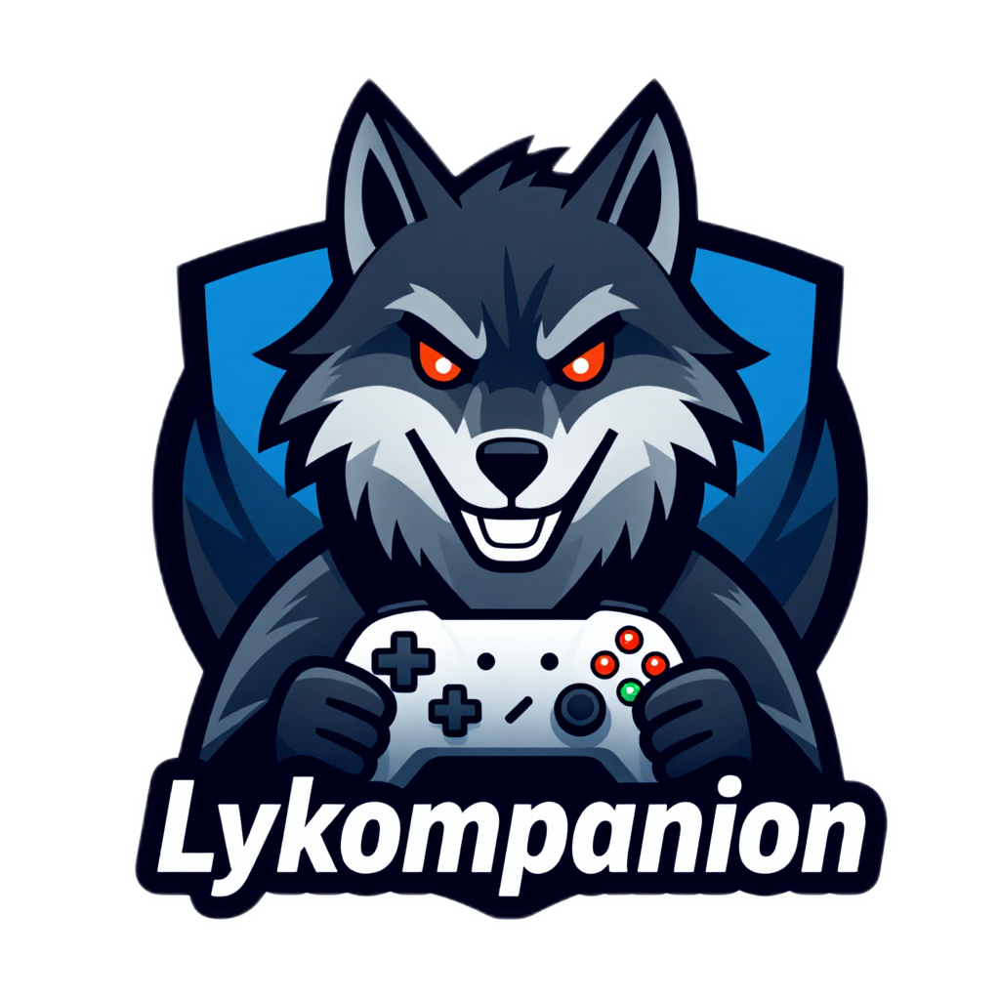

LykompanionLower values cut image token cost on screenshots sent to the LLM.
Back up chats, memories, game sessions, reminders, voice recordings, profile pictures, and settings (including API keys) into a single file for moving to another machine.
Importing overwrites current data and settings. A restart is required afterward for imported settings to take effect.
All secrets are stored server-side and never returned to the browser after saving.
Game database lookups (genre, summary, release date, platforms, rating). IGDB auth runs through Twitch — create a free app at dev.twitch.tv/console/apps to get a Client ID and Secret.
Store and app info works without setup. To let the companion check your owned games and playtime, add a free API key from steamcommunity.com/dev/apikey plus your numeric SteamID64.
Last-resort cover art fallback for the Gaming Journal's My Games library, when a game's box art isn't found on Steam or IGDB. Get a free API key at steamgriddb.com/profile/preferences/api.
Lets the companion actually control playback on your Spotify account by voice ("play X on Spotify") —
starts the track on whatever device you're already using (phone, desktop app, web player), not just a
link. Requires Spotify Premium (Spotify's playback-control API is Premium-only) and a
free app from developer.spotify.com/dashboard —
add a Redirect URI of http://127.0.0.1:6692/api/spotify/oauth/callback if you run the dev
server directly (adjust the port if different), or http://localhost:6692/api/spotify/oauth/callback
if you're using the desktop app (RUN.cmd, which always loads via localhost) — add
both if unsure which — in that app's settings, then paste its Client ID below and click Connect. No
Client Secret needed — the connection uses PKCE, which doesn't require one.
Lets the companion list and play your own YouTube playlists ("play my road trip playlist") in the
in-app player, instead of just searching public YouTube. Needs a free OAuth client from
Google Cloud Console
(enable the "YouTube Data API v3", create an OAuth client of type "Web application" —
"Desktop app" won't work here, it doesn't let you register a custom redirect path) — add an Authorized
redirect URI of http://127.0.0.1:6692/api/youtube/oauth/callback if you run the dev server
directly (adjust the port if different), or http://localhost:6692/api/youtube/oauth/callback
if you're using the desktop app (RUN.cmd, which always loads via localhost) —
add both if unsure which — then paste its Client ID and Client Secret below and click Connect. Unlike
Spotify, Google's flow still requires the Client Secret even here — it isn't treated as sensitive in
this context per Google's own docs, but the field is still required.
Tune how the hands-free mic decides when you're speaking. Stored server-side.
Say this phrase to re-enable hands-free listening after it's been turned off, without touching keyboard or mouse. Uses your browser's built-in speech recognition (Chrome/Edge only).
Not supported in this browser — try Chrome or Edge.
Tell your companion anything it should always know or do — tone, how to address you, things to avoid, etc. This is added to every conversation.
Facts your companion has saved about you as a person — preferences, life context, cross-game habits. It adds and removes these itself during conversation, or you can manage them directly here. Game-specific facts live in the Gaming Journal instead.
Recurring nudges the companion set up during conversation - each repeats the exact message it composed when you set it up, spoken every N minutes while its game is the one being played, and pausing automatically otherwise. Set these by asking your companion, e.g. "remind me to save every 5 minutes".
One-time nudges the companion set up during conversation - each speaks the exact message it composed when you set it up, once, at a specific time while its game is the one being played. Set these by asking your companion, e.g. "in 20 minutes remind me to check the auction house".
Usage across all conversations, broken down by feature and time range.
The last 50 individual LLM requests and tool calls (one entry per API call or tool execution — a single reply can involve several), most recent first. Persisted to disk across restarts while enabled.
Full debug request details. Scroll to inspect the request messages, tool calls, and result payload.
Drag and drop an image here, click to browse, or paste it from your clipboard.
You can always ask the companion to take a screenshot of your active screen if you'd like to quickly share something.
Your AI gaming companion — talk to it by voice or text while you play, let it see your screen when you want, and it remembers what matters. Setup takes under a minute.
Pick the provider that powers the conversation.
This model drives every reply. For voice chat it needs audio and image input — the list is already filtered to models that qualify.
You can change this any time in Settings → General.
Lykompanion can read its replies aloud — pick how, or turn narration off.
Voices, speed, hands-free listening and the wake word live in Settings → Voice & Narration.